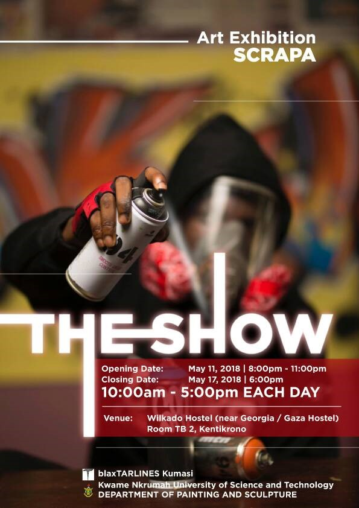
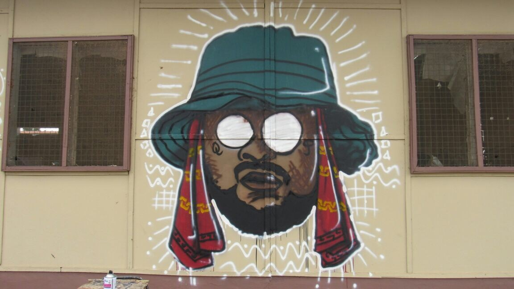

One of my first exhibitions back in 2018. • The Show, Wilkado hostel, Kumasi (May 2018)

SCRAPA: My World of Hip-Life, acrylic paint and spray paint on concrete wall (7x20ft) 2016
SCRAPA: School boy Q, acrylic paint and spray paint in plywood (8x8ft) 2017

SCRAPA: THE RAIN OF SCRAPA, acrylic paint and spray paint on plywood (8x8ft) 2018